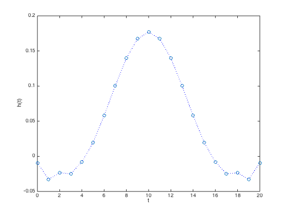
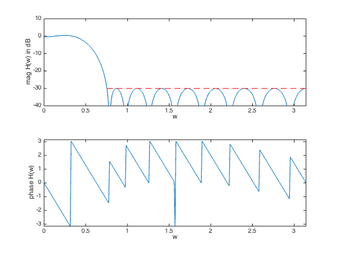

% "Filter design" lecture notes (EE364) by S. Boyd % (figures are generated) % % Designs a linear phase FIR lowpass filter such that it: % - minimizes the maximum passband ripple % - has a constraint on the maximum stopband attenuation % % This is a convex problem. % % minimize delta % s.t. 1/delta <= H(w) <= delta for w in the passband % |H(w)| <= atten_level for w in the stopband % % where H is the frequency response function and variables are % delta and h (the filter impulse response). % % Written for CVX by Almir Mutapcic 02/02/06 %******************************************************************** % user's filter specifications %******************************************************************** % filter order is 2n+1 (symmetric around the half-point) n = 10; wpass = 0.12*pi; % passband cutoff freq (in radians) wstop = 0.24*pi; % stopband start freq (in radians) atten_level = -30; % stopband attenuation level in dB %******************************************************************** % create optimization parameters %******************************************************************** N = 30*n+1; % freq samples (rule-of-thumb) w = linspace(0,pi,N); A = [ones(N,1) 2*cos(kron(w',[1:n]))]; % matrix of cosines % passband 0 <= w <= w_pass ind = find((0 <= w) & (w <= wpass)); % passband Ap = A(ind,:); % transition band is not constrained (w_pass <= w <= w_stop) % stopband (w_stop <= w) ind = find((wstop <= w) & (w <= pi)); % stopband Us = 10^(atten_level/20)*ones(length(ind),1); As = A(ind,:); %******************************************************************** % optimization %******************************************************************** % formulate and solve the linear-phase lowpass filter design cvx_begin variable delta variable h(n+1,1); minimize( delta ) subject to % passband bounds Ap*h <= delta; inv_pos(Ap*h) <= delta; % stopband bounds abs( As*h ) <= Us; cvx_end % check if problem was successfully solved disp(['Problem is ' cvx_status]) if ~strfind(cvx_status,'Solved') return else % construct the full impulse response h = [flipud(h(2:end)); h]; fprintf(1,'The optimal minimum passband ripple is %4.3f dB.\n\n',... 20*log10(delta)); end %******************************************************************** % plots %******************************************************************** figure(1) % FIR impulse response plot([0:2*n],h','o',[0:2*n],h','b:') xlabel('t'), ylabel('h(t)') figure(2) % frequency response H = exp(-j*kron(w',[0:2*n]))*h; % magnitude subplot(2,1,1) plot(w,20*log10(abs(H)),[wstop pi],[atten_level atten_level],'r--'); axis([0,pi,-40,10]) xlabel('w'), ylabel('mag H(w) in dB') % phase subplot(2,1,2) plot(w,angle(H)) axis([0,pi,-pi,pi]) xlabel('w'), ylabel('phase H(w)')
Calling SDPT3 4.0: 872 variables, 278 equality constraints For improved efficiency, SDPT3 is solving the dual problem. ------------------------------------------------------------ num. of constraints = 278 dim. of sdp var = 74, num. of sdp blk = 37 dim. of socp var = 458, num. of socp blk = 229 dim. of linear var = 303 ******************************************************************* SDPT3: Infeasible path-following algorithms ******************************************************************* version predcorr gam expon scale_data HKM 1 0.000 1 0 it pstep dstep pinfeas dinfeas gap prim-obj dual-obj cputime ------------------------------------------------------------------- 0|0.000|0.000|7.3e+02|4.9e+01|1.1e+05| 2.048238e+01 0.000000e+00| 0:0:00| chol 1 1 1|0.921|0.699|5.8e+01|1.5e+01|2.5e+04| 5.008791e+01 -2.175738e+01| 0:0:00| chol 1 1 2|0.732|0.870|1.6e+01|1.9e+00|4.3e+03| 6.281441e+01 -4.143755e+01| 0:0:00| chol 1 1 3|0.995|0.863|7.8e-02|2.7e-01|5.4e+02| 6.205041e+01 -4.108188e+01| 0:0:00| chol 1 1 4|1.000|0.942|5.0e-04|1.6e-02|7.0e+01| 4.728715e+01 -3.430874e+00| 0:0:00| chol 1 1 5|0.368|1.000|3.1e-04|1.1e-04|4.3e+01| 3.624702e+01 -6.510807e+00| 0:0:00| chol 1 1 6|1.000|0.921|1.5e-05|7.2e-05|6.5e+00| 3.973191e+00 -2.473693e+00| 0:0:00| chol 1 1 7|0.916|0.900|1.4e-06|1.0e-05|2.8e+00| 1.071821e+00 -1.754710e+00| 0:0:00| chol 1 1 8|0.820|0.946|2.6e-07|8.4e-07|1.0e+00|-1.829241e-01 -1.179210e+00| 0:0:00| chol 1 1 9|1.000|1.000|1.6e-09|5.4e-08|3.8e-01|-7.085424e-01 -1.089012e+00| 0:0:00| chol 1 1 10|0.718|0.879|4.5e-10|6.9e-09|1.4e-01|-9.217470e-01 -1.059581e+00| 0:0:00| chol 1 1 11|0.958|0.914|1.9e-11|7.0e-10|1.9e-02|-1.034838e+00 -1.054108e+00| 0:0:00| chol 1 1 12|0.819|0.737|3.5e-12|1.9e-10|7.8e-03|-1.044891e+00 -1.052643e+00| 0:0:00| chol 1 1 13|0.795|0.928|6.9e-13|1.5e-11|3.0e-03|-1.048933e+00 -1.051939e+00| 0:0:00| chol 1 1 14|0.662|0.907|2.0e-13|2.4e-12|1.5e-03|-1.050281e+00 -1.051737e+00| 0:0:00| chol 1 1 15|0.711|0.932|2.7e-12|1.2e-12|6.4e-04|-1.050991e+00 -1.051632e+00| 0:0:00| chol 1 1 16|0.787|0.942|5.0e-12|1.1e-12|2.3e-04|-1.051364e+00 -1.051591e+00| 0:0:00| chol 1 1 17|0.929|0.860|1.7e-12|1.1e-12|3.9e-05|-1.051542e+00 -1.051581e+00| 0:0:00| chol 1 1 18|0.910|0.810|1.4e-12|1.2e-12|5.9e-06|-1.051573e+00 -1.051579e+00| 0:0:00| chol 1 1 19|0.897|0.865|1.6e-12|1.2e-12|8.9e-07|-1.051577e+00 -1.051578e+00| 0:0:01| chol 1 1 20|0.945|0.969|2.1e-12|1.0e-12|7.6e-08|-1.051578e+00 -1.051578e+00| 0:0:01| chol 1 1 21|0.725|1.000|7.0e-13|1.0e-12|3.9e-08|-1.051578e+00 -1.051578e+00| 0:0:01| stop: max(relative gap, infeasibilities) < 1.49e-08 ------------------------------------------------------------------- number of iterations = 21 primal objective value = -1.05157797e+00 dual objective value = -1.05157801e+00 gap := trace(XZ) = 3.93e-08 relative gap = 1.27e-08 actual relative gap = 1.27e-08 rel. primal infeas (scaled problem) = 7.01e-13 rel. dual " " " = 1.00e-12 rel. primal infeas (unscaled problem) = 0.00e+00 rel. dual " " " = 0.00e+00 norm(X), norm(y), norm(Z) = 1.2e+00, 1.1e+00, 1.2e+01 norm(A), norm(b), norm(C) = 8.6e+01, 2.0e+00, 9.6e+00 Total CPU time (secs) = 0.57 CPU time per iteration = 0.03 termination code = 0 DIMACS: 7.0e-13 0.0e+00 4.8e-12 0.0e+00 1.3e-08 1.3e-08 ------------------------------------------------------------------- ------------------------------------------------------------ Status: Solved Optimal value (cvx_optval): +1.05158 Problem is Solved The optimal minimum passband ripple is 0.437 dB.
 